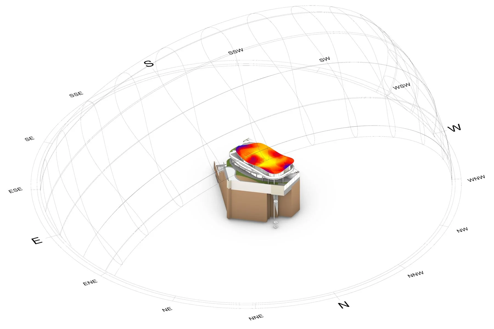

01
Simulation and optimization
Every decision measured before construction.
We simulate sun, daylight, energy, wind, water, sound and people flow on your design model and test thousands of variations to find the one that delivers more with less.
- Solar radiation, PV, daylight and glare
- Thermal and energy performance
- Wind and outdoor comfort (CFD), drainage and acoustics
- Single- and multi-objective optimization with Pareto fronts
- Reports and drawings for approval and certification
